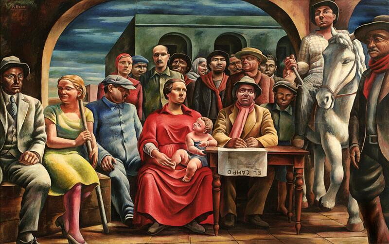

LA VANGUARDIA ARGENTINA
En los años 20, argentina vivía un gran crecimiento, crecían las ciudades, llegaban muchos inmigrantes de Europa y la economía iba bien. Buenos Aires se hacia mas modernos, con calles asfaltadas, cines, diarios y revistas nuevas.
Pero también habían cambios sociales: la gente empezaba a pedir mas derecho, los obreros se organizaban y surguîan nuevas ideas. En la cultura, se rompía con lo viejo y llegaban las vanguardias.
Línea de tiempo
LLEGAN NUEVAS IDEAS VANGUARDISTAS A ARGENTINA Y BORGES INTRODUCE EL ULTRAISMO.
SE PUBLICAN NUEVAS REVISTAS Y OBRAS QUE INPULSAN LA RENOVACION LITERARIA.
APARECE MARTIN FIERRO Y CRECE EL MARTINFIERRISMO.
LAS VANGUARDIAS INCORPORAN TEMAS DE LA VIDA URBANA ARGENTINA.
LAS VANGUARDIAS GANAN RECONOCIMIENTO MIENTRAS ARGENTINA ENFRENTA LA CRICIS ECONOMICA.
UN GOLPE DE ESTADO DERROCA Y YRIGOYEN.
Artistas y referentes
Fue el pionero en romper con el nacionalismo musical tradicional. En 1929 fundó el célebre Grupo Renovación, introduciendo las técnicas de la vanguardia europea (el neoclasicismo y las influencias de Stravinsky) en la música culta argentina.
El introductor formal del cubismo. Su muestra de 1924 en Buenos Aires dinamitó el ambiente tradicional, obligando a toda una generación a mirar y pintar de una manera radicalmente nueva.
Líder absoluto de la vanguardia poética. En 1921 importó desde España el ultraísmo y fundó las revistas murales Prisma y Proa, publicando en 1923 su revolucionario primer libro de poemas, Fervor de Buenos
Fue el motor estético y visual detrás de los textos de la época. Entre 1921 y 1927 diseñó las xilografías, portadas e ilustraciones de las míticas revistas literarias del período (Proa y Martín Fierro), dándole un rostro gráfico único al movimiento.
Grupo Florida
fue un colectivo de escritores y artistas de la vanguardia argentina de los años 1920. Con base en la elegante calle Florida de Buenos Aires y nucleados en la revista Martín Fierro, priorizaban la renovación estética y el "arte puro" por sobre el compromiso político. Sus miembros más destacados, como Jorge Luis Borges, Oliverio Girondo y Xul Solar, rompieron con las estructuras tradicionales mediante el uso de la metáfora audaz y el humor, manteniendo una histórica rivalidad con el Grupo Boedo, que estaba más enfocado en el realismo social y las problemáticas obreras.
Revista Martín Fierro
La revista Martín Fierro (1924-1927) fue el principal órgano de difusión del vanguardismo en Argentina y el estandarte del Grupo Florida. Dirigida por Evar Méndez, promovió la renovación estética, la experimentación formal y el cosmopolitismo, rechazando el academicismo tradicional. En sus páginas participaron figuras clave como Jorge Luis Borges y Oliverio Girondo, convirtiéndola en un hito de la modernización cultural del país
Ultraísmo
>El ultraísmo fue un movimiento literario de vanguardia surgido en España en 1918 y r ápidamente adoptado en Argentina durante los años 20 —impulsado principalmente por la revista Martín Fierro y figuras como Jorge Luis Borges—. Se caracterizó por la búsqueda radical de renovación estética, la supresión de elementos ornamentales y sentimentales, el uso de metáforas audaces basadas en la asociación libre de imágenes, la eliminación de la rima tradicional y la exaltación de la modernidad, la tecnología y el cosmopolitismo.
Arte moderno
Entre 1920 y 1930, las vanguardias artísticas rompieron definitivamente con el arte tradicional para explorar la psicología humana y la política de posguerra. Lo más importante de esta década fue el nacimiento del Surrealismo, que usó el subconsciente y los sueños como fuente de creación (con figuras como Salvador Dalí), y el auge de la Abstracción Geométrica (como el Constructivismo y De Stijl de Piet Mondrian), que buscaba un orden racional a través de líneas puras y colores primarios. En resumen, fue el período clave donde el arte dejó de copiar la realidad para empezar a reinventarla de forma radical
¿Cómo interpretar esta vanguardia hoy?
Compará las ideas de la época con manifestaciones culturales actuales y construí una mirada propia.